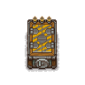

Soul container II
| Soul container II | |
|---|---|
 | |
Basic information
| |
Required Technology :
|
Updated equipment |
Building Information
| |
Horizontal x Vertical :
|
3x4 |
Rotatable :
|
False |
Location(s)
| |
| Souls room | |

The Soul container II is a workbench introduced with the Better Save Soul DLC, that may be built in the Souls room after you unlock the Updated equipment technology. The Soul container II allows you to store up to 3 souls for later usage, but keep in mind the souls will decay slowly even in this container.
To use one of these containers first, you have to build a frame first [Soul container II (Base)], then fill it up by finishing the build with extra materials [Soul container II (Finish)]. There are only 3 spots in the Souls room where this container can be built.
Note: When a soul stays in the container for too long, it will eventually die and leave a Sin Shard behind. Rate of decay appears to be 4-5% per day (just one observation , not thoroughly tested).
Cost
| Icon | Materials Required | Energy | Notes |
|---|---|---|---|
(base) |
4× Wooden plank 4× Nails 4× Complex iron parts |
- |
Not usable, but gives the ability to finish the build. |
(finish) |
4× A polished brick of stone 3× Sin Shard 2× Wooden plank |
- |
Adds 15 Can store up to 3 souls (or 3 stacks of Sin Shards), but the souls will decay slowly! |
| ||||||||